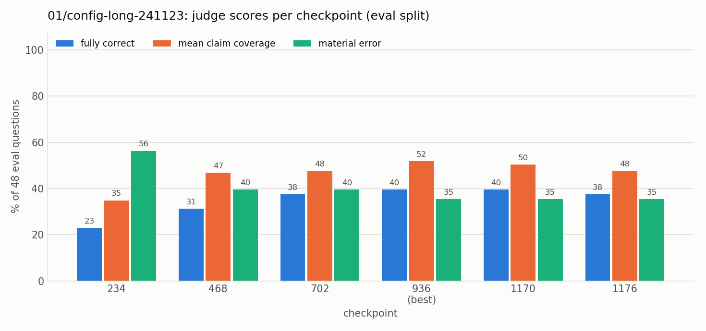
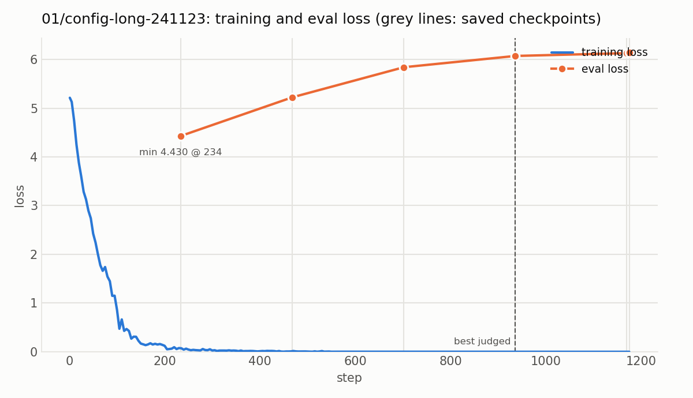

Experiment 01: Baseline on the original catalog
Tests with OPALX repo slice · field-solver / space-charge slice, 39 topics, judged by Claude Opus 5.5 against required and forbidden claims (README, source files)
1Summary
- Idea
- Train the adapter on the original hand-written catalog: ten question–answer pairs for each of the 39 topics of the field-solver slice.
- Upshot
- About 30% of the eval questions fully correct after 8 epochs (40% after 24 epochs), and none of the multi-topic compositions. More epochs plateau.
2Setup
- Model
unsloth/Qwen3-8B-unsloth-bnb-4bit(Qwen3-8B, 4-bit), LoRA r = 32, α = 32, dropout 0, on all seven projections (q, k, v, o, gate, up, down); AdamW 8-bit, lr 1e-4 linear, 6 warmup steps, batch 8, weight decay 0.001, max sequence length 2048, seed 3407, loss on the answer tokens only- Configurations
- Alpaca format.
config.yaml: 8 epochs, 392 steps, checkpoint every 78 steps. Variantconfig-long: 24 epochs, 1,176 steps, checkpoint every 234 steps; everything else identical. - Training data
data/catalog.py(39 topics, written by Codex from 20 OPALX source excerpts of the space-charge / field-solver code, commitb5f495e). Per topic: 4recallwordings sharing one short answer, 4mechanismwordings sharing one longer explanation, 2scenarioquestions with their own answers. 390 rows, 156 distinct answers, mean answer 47 words.
3Hypothesis
Baseline. The original data, without additions, so that the later experiments have a reference.
4Results
| checkpoint | fully correct | single-topic correct | mean claim coverage | composition coverage | material errors |
|---|---|---|---|---|---|
| 78 | 0/48 (0%) | 0/39 (0%) | 0.052 | 0.00 | 48/48 (100%) |
| 156 | 6/48 (12%) | 6/39 (15%) | 0.212 | 0.06 | 35/48 (73%) |
| 234 | 12/48 (25%) | 12/39 (31%) | 0.347 | 0.19 | 31/48 (65%) |
| 312 | 14/48 (29%) | 14/39 (36%) | 0.396 | 0.14 | 26/48 (54%) |
| 390 (best) | 14/48 (29%) | 14/39 (36%) | 0.451 | 0.24 | 24/48 (50%) |
| 392 | 14/48 (29%) | 14/39 (36%) | 0.432 | 0.18 | 25/48 (52%) |
| checkpoint | fully correct | single-topic correct | mean claim coverage | composition coverage | material errors |
|---|---|---|---|---|---|
| 234 | 11/48 (23%) | 11/39 (28%) | 0.349 | 0.09 | 27/48 (56%) |
| 468 | 15/48 (31%) | 15/39 (38%) | 0.469 | 0.19 | 19/48 (40%) |
| 702 | 18/48 (38%) | 18/39 (46%) | 0.476 | 0.17 | 19/48 (40%) |
| 936 (best) | 19/48 (40%) | 19/39 (49%) | 0.517 | 0.24 | 17/48 (35%) |
| 1170 | 19/48 (40%) | 19/39 (49%) | 0.503 | 0.24 | 17/48 (35%) |
| 1176 | 18/48 (38%) | 18/39 (46%) | 0.476 | 0.24 | 17/48 (35%) |
Single-topic correct counts the 39 single-topic questions, composition coverage is the mean claim coverage on the 9 multi-topic questions. Bold: best checkpoint (most fully correct).

Fully correct rises until about checkpoint 936 (about 19 passes over the data) and then stays flat or drops slightly, while material errors stay above a third of the answers.

The training loss is about zero from step 400 on. The eval loss (on the 48 eval reference answers) is lowest at the first saved checkpoint, 234, and rises from there, while the judged scores keep improving until 936. Eval loss and judge disagree, which is why checkpoints are chosen by the judge.
5Conclusion
This is the baseline. Performance is stable at about 40% correct answers after checkpoint 936 (the data seen about 20 times). Repeating the data more does not help and starts to hurt the eval set after about 23 passes: overfitting. None of the 9 composition questions is ever fully correct.
Related: experiment 02 (one answer per topic and more question wordings)